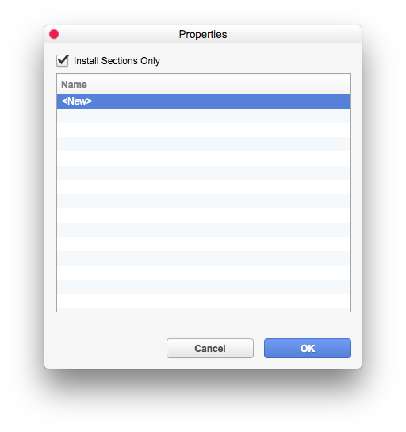
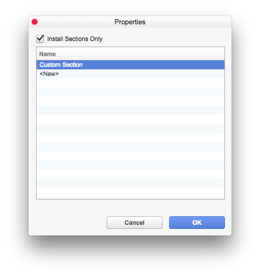

category.identifier
类别的唯一标识符。target保留。始终为 "none"。dialog
在执行代理之前请求用户输入数据的对话框。如果不存在，则代理将立即执行。
process.description
代理在进度窗口中显示的描述。（可以由代理在运行时更改）。
process.run
定义代理逻辑的 JavaScript 函数。它接受两个参数：
object
如果存在 dialog 属性，则包含来自用户的输入数据。否则为 null。
context
脚本上下文 (GSScriptContext) 对象，允许获取、修改、创建和删除文档以及执行其他操作。
使用 Objective-J
为了获得更多控制，也可以为脚本代理使用 Objective-J。由于 Objective-J 是 JavaScript 的超集，您可以只创建一个 Objective-J 文件而不是 JavaScript 文件，所有其他步骤都与您现在可以访问 Objective-J API 的区别相同。
HTML
部分扩展
部分扩展
I
n our
卡片扩展示例
我们添加了一个全新的数据库类别。但有时，仅仅修改现有的数据库类别更有意义，就像如果我们只想为“系统”类别添加一些新选项一样。我们可以编辑“系统”类别，但与其他扩展的冲突是可能的。为避免这些冲突，可以创建部分扩展。
部分扩展只向已存在的 UI 视图添加一个或多个新部分。要创建部分扩展，我们首先必须使用 uid 属性为我们希望通过部分扩展安装的所有部分添加一个唯一标识符。示例部分，我们将其放入“系统”数据库类别，如下所示：

{

"name": "Custom Section",
"uid": "ext.CustomSystemSection",
"items": [